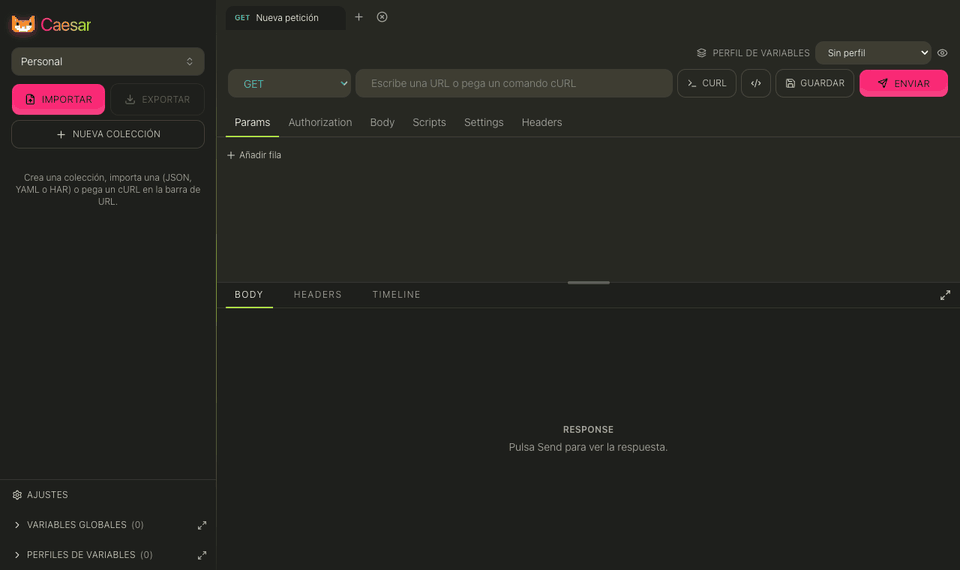
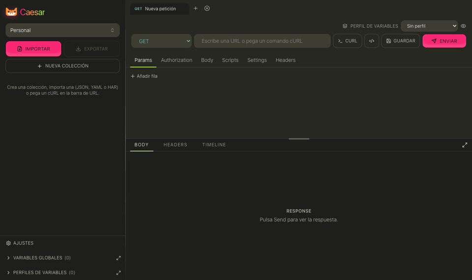
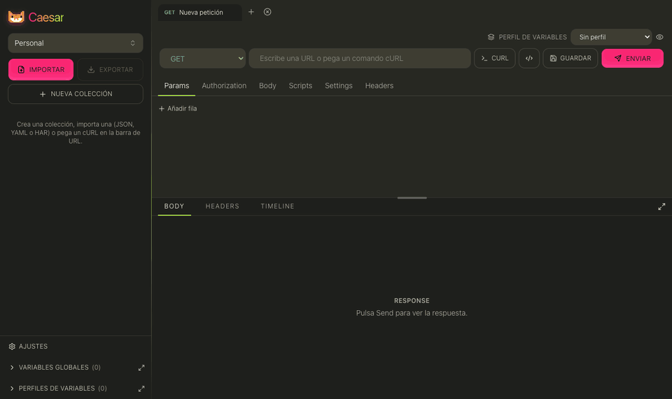

Accueil › Guide des fonctionnalités
Guide Caesar : chaque fonctionnalité, une par une
Caesar est un client d’API de bureau conçu pour être rapide : il démarre instantanément, garde tout sur ta machine et ne demande pas de compte pour commencer. Ce guide passe en revue chaque fonctionnalité avec un GIF du résultat réel, de ta première requête aux tests, GraphQL, WebSockets et au travail en équipe.
Qu’est-ce que Caesar ?
Caesar est un client d’API de bureau pour Windows, macOS et Linux. Il te permet de créer, envoyer et tester des requêtes HTTP, GraphQL et WebSocket, de les organiser en collections et de les partager avec ton équipe, le tout depuis une interface épurée où la couleur et le clavier t’épargnent des clics.
- Local-first : en mode Invité, tes collections vivent sur ton appareil. Il fonctionne hors ligne et sans compte.
- Vraiment rapide : il est construit avec Rust et Tauri, pas avec un navigateur embarqué.
- Familier : si tu viens de Postman ou Insomnia, tu peux importer tes collections et tes scripts
pm.*continuent de fonctionner. - Fair Source (FSL) : le code est public et gratuit à utiliser. Ce n’est pas de l’open source : sa vente est interdite.
Pour qui ? Pour tous ceux qui testent des API au quotidien (backend, frontend, QA, mobile) et veulent un outil léger, privé et sans friction. Aussi pour ceux qui doivent partager des collections avec leur équipe sans monter d’infrastructure.
Pourquoi il est si rapide
La vitesse de Caesar n’a rien d’un tour de magie : elle vient de sa conception.
Installer Caesar
Télécharge l’installeur pour ton système depuis la page de téléchargement ou depuis ton app store :
| Système | Fichier / Store |
|---|---|
| Windows | Installeur .exe 64 bits (aussi .msi) · Bientôt sur le Microsoft Store |
| macOS (Intel et Apple Silicon) | .dmg universel, signé et notarisé par Apple |
| Ubuntu (Snap Store) | sudo snap install caesar ou depuis l’Ubuntu App Center (Snap Store) |
| Linux | .deb (Debian/Ubuntu) ou AppImage (toute distribution) |
La première fois, un avertissement du système peut apparaître, surtout sur Windows (SmartScreen). C’est normal pour un nouveau projet, et le guide des avertissements explique sur quoi cliquer. Ensuite, Caesar se met à jour tout seul.
Aucune ligne de commande. Caesar est une application de bureau : tu n’as besoin ni de Node, ni de Docker, ni d’aucune installation supplémentaire pour l’utiliser.
Ta première requête
Ouvre Caesar et clique sur Nouvel onglet (Ctrl+T). Choisis la méthode (GET, POST, PUT, PATCH, DELETE, HEAD ou OPTIONS), saisis l’URL et clique sur Send ou appuie sur Ctrl+Enter.
- Saisis l’URL dans la barre du haut.
- Clique sur Send. Tu verras une animation des étapes de la requête (résolution du nom, connexion, envoi, réception).
- Lis la réponse en dessous : statut, temps, taille et body.
- Appuie sur Ctrl+S pour l’enregistrer dans une collection.

En plus des sept méthodes habituelles, dans les Paramètres tu peux ajouter des méthodes supplémentaires (par exemple celles de WebDAV). Seules CONNECT et TRACE sont refusées.
Paramètres et headers
Les onglets Params et Headers utilisent un éditeur clé/valeur : tu ajoutes des lignes, tu les actives ou désactives avec la case à cocher sans les supprimer, et l’URL se met à jour toute seule.

- Décoche une ligne pour tester sans elle et sans la perdre.
- Tu peux utiliser des
{{variables}}dans les clés et les valeurs (voir Variables et profils). - Si tu colles une URL avec
?a=1&b=2, les paramètres apparaissent dans leur tableau.
Body de la requête
Dans l’onglet Body, tu choisis le format dont ton API a besoin :
| Type | Quand l’utiliser |
|---|---|
| JSON | API REST modernes. Éditeur avec vérification de la syntaxe et coloration. |
| Texte | XML, texte brut ou autre contenu brut. |
| Form-data | Formulaires avec fichiers joints (jusqu’à 100 Mo par fichier). |
| x-www-form-urlencoded | Formulaires classiques. |
| GraphQL | Éditeur dédié Query et Variables (voir GraphQL). |

Par sécurité, Caesar ne joint que les fichiers que tu as choisis dans le sélecteur de fichiers du système.
Lire la réponse
La réponse s’affiche avec le statut (avec code couleur), le temps et la taille, et trois vues :
- Pretty : JSON formaté et coloré. Tu peux masquer les valeurs vides pour mieux le lire.
- Raw : le texte exactement tel qu’il est arrivé.
- Timeline : les étapes de la requête avec leur durée.
Avec le filtre JSONPath, tu ne gardes que la partie qui t’intéresse, par exemple $.data[0].id. Et avec Ctrl+F tu recherches dans la réponse (voir Onglets et recherche).
Les réponses sont lues jusqu’à 10 Mo ; si l’une est plus grosse, Caesar la tronque et te prévient pour que la fenêtre ne se fige pas.
Coller et copier du cURL
Si quelqu’un te passe une commande curl (depuis la documentation d’une API, les outils de développement du navigateur ou un collègue), colle-la directement dans la barre d’URL. Caesar crée la requête avec sa méthode, ses headers et son body.

Et dans l’autre sens : copie n’importe quelle requête en cURL pour la partager dans un ticket ou l’exécuter dans un terminal. Il existe une commande pour ça (pas de raccourci par défaut, tu peux en assigner un).
Authentification
Dans l’onglet Authorization, tu choisis comment t’identifier. Caesar prend en charge ces types :
L’option Hériter est la plus pratique : tu définis l’authentification une fois sur la collection ou le dossier et chaque requête qu’il contient l’utilise. Si le token change, tu le changes à un seul endroit.
Astuce : stocke le token dans une variable ({{token}}) et utilise cette variable dans l’authentification ; ainsi tu ne le colles pas dans chaque requête.
Variables et profils
Les variables te permettent d’écrire {{baseUrl}} au lieu d’une URL fixe. Il y a trois niveaux :
- Variables globales : valables dans toutes tes collections.
- Variables de collection : uniquement pour cette collection ou ce dossier.
- Profils de variables : des ensembles nommés (Development, Staging, Production...) que tu actives avec le sélecteur à côté de Send. C’est l’équivalent des Environments de Postman.

- Les variables
{{x}}s’affichent dans une couleur différente dans l’URL, les headers, les paramètres et l’authentification, pour qu’aucune ne passe inaperçue. - Ctrl+clic sur une variable ouvre sa valeur pour la consulter et la modifier sans quitter la requête.
- Ctrl+Space ouvre le sélecteur de variables.
- Tu peux marquer des variables comme secrètes pour qu’elles ne soient pas visibles au premier coup d’œil.
- Quand tu importes depuis Postman, ses environments deviennent des profils et ses globals deviennent des variables globales.
Tests et scripts
L’onglet Scripts exécute un script à l’arrivée de la réponse (ses résultats apparaissent dans un onglet du panneau de réponse). Il utilise une syntaxe de type Postman (pm.*), donc ce que tu connais déjà fonctionne :
pm.test("responds 200", () => {
pm.expect(pm.response.code).to.equal(200);
});
const data = pm.response.json();
pm.test("returns users", () => {
pm.expect(data.length).to.be.above(0);
});
pm.testetpm.expectpour vérifier le statut, les headers et le body.pm.response.json()pour lire le body déjà parsé.pm.environment.set,pm.collectionVariables.setetpm.globals.setpour stocker des valeurs.
Sûr par conception. Les scripts s’exécutent dans un interpréteur dédié à un sous-ensemble de JavaScript : pas de réseau, pas d’accès au système de fichiers et pas d’eval. C’est pourquoi un script importé ne peut rien faire en dehors de son propre périmètre.
Enchaîner les requêtes
Un cas typique : te connecter et utiliser le token dans les autres requêtes. Avec un test sur la requête de login :
const r = pm.response.json();
pm.environment.set("token", r.access_token);Ensuite, n’importe quelle requête peut utiliser {{token}} dans son header ou dans l’authentification Bearer. Tu exécutes le login une fois et le reste est authentifié, sans copier-coller.
Collections et dossiers
Les collections sont le carnet où tu ranges tes requêtes. Crée-en une depuis la barre latérale, ajoute des dossiers dans des dossiers et glisse-dépose pour réordonner.

- Chaque collection ou dossier peut avoir ses propres variables et son autorisation, héritées par tout ce qu’il contient.
- Tout s’enregistre tout seul : Caesar sauvegarde automatiquement et conserve tes onglets et brouillons quand tu le fermes.
- Tu peux partager une collection avec ton équipe (voir Synchro et équipes).
Import et export
Tu ne pars pas de zéro. Caesar importe ce que tu as déjà et exporte quand tu veux :
| Format | Import | Export |
|---|---|---|
| Postman (collections et environments v2.1) | Oui | Oui (JSON) |
| Insomnia | Oui | – |
| Caesar JSON | Oui | Oui |
| YAML | Oui | Oui |
| HAR (from the browser) | Oui | Oui |
| cURL | Coller dans la barre d’URL | Copier en cURL |

Avant de partager une collection, Caesar peut faire une sauvegarde pour que tu ne perdes rien.
Générateur de code
Avec le bouton </>, tu transformes la requête active en code prêt à coller dans ton projet. Il y a 20 langages et bibliothèques, dont cURL, Python (Requests), JavaScript (Fetch, XHR), Node.js (Axios), Go, Rust, Java, Kotlin, C#, PHP, Ruby, PowerShell, Swift et Dart.

Tu peux ajuster des options comme l’indentation, le timeout ou le suivi des redirections, et copier le résultat en un clic.
GraphQL
Choisis le body GraphQL et Caesar te donne un éditeur de Query et un autre pour les Variables, comme dans Postman :
- Charge le schéma par introspection.
- Autocomplétion des champs et des types pendant que tu écris.
- Explorateur de schéma pour parcourir les types et les champs.
- Beautify pour formater la requête.
- Génère les variables à partir de la requête et un sélecteur d’opération quand il y en a plusieurs.

Les requêtes GraphQL s’importent et s’exportent avec Postman.
WebSockets
Crée une requête WebSocket, connecte-toi et suis la conversation dans une timeline : ce que tu envoies et ce que tu reçois, avec l’heure et la taille.

- Écris l’URL avec
ws://ouwss://(si tu utiliseshttp(s), elle est convertie). - Tu peux définir des sous-protocoles séparés par des virgules.
- Envoie des messages texte ou binaires (en hexadécimal ou base64) et inspecte les binaires dans un hex dump.
- Prend en charge les
{{variables}}dans l’URL.
Onglets et recherche
Travaille avec autant d’onglets que tu veux. Caesar mémorise ceux que tu avais ouverts et les restaure exactement comme ils étaient quand tu le relances.

- Ctrl+T nouveau, Ctrl+W fermer, Ctrl+1…9 aller à l’onglet N.
- Alt+← / → revient à l’onglet visité avant ou après.
- Ctrl+F cherche dans la réponse ou dans l’éditeur.
- Clic droit ou Ctrl+Shift+W les ferme tous et t’amène à l’écran d’accueil avec le chat.
Sur macOS, Ctrl est remplacé par Cmd.
Workspaces
Un workspace est un ensemble séparé de collections, de variables et d’onglets : un pour le travail, un autre pour les projets perso, un autre par client. Tu changes depuis le sélecteur de la barre latérale.

Le mode Invité et les comptes sans Pro incluent un workspace ; avec Pro, tu peux en avoir autant que tu veux.
Raccourcis clavier
Chaque commande de Caesar a un raccourci, et tu peux tous les modifier. Ouvre l’éditeur avec Ctrl+/.

| Action | Raccourci par défaut |
|---|---|
| Envoyer la requête | Ctrl+Enter |
| Enregistrer dans la collection | Ctrl+S |
| Nouvel onglet / Fermer l’onglet | Ctrl+T / Ctrl+W |
| Aller à la barre d’URL | Ctrl+L |
| Rechercher | Ctrl+F |
| Choisir une variable | Ctrl+Space |
| Ouvrir les paramètres | Ctrl+, |
| Voir et modifier les raccourcis | Ctrl+/ |
Tu peux aussi créer des actions personnalisées qui enchaînent plusieurs commandes et placer des boutons de ton choix à côté de l’URL.
Thèmes, polices et langues
Caesar est livré avec six thèmes : Monokai (par défaut), Dracula, Tokyo Night, Nord, One Dark et GitHub Light pour ceux qui préfèrent un fond clair.

Tu peux aussi choisir la police et la taille du texte, désactiver les animations et ajuster la largeur de la barre latérale. L’interface est disponible en espagnol, anglais, allemand, français et italien.
Paramètres réseau
Dans les Paramètres, tu contrôles la façon dont les requêtes sont envoyées :
| Réglage | Ce qu’il fait |
|---|---|
| Suivre les redirections | Suit jusqu’à 10 redirections, ou aucune. |
| Timeout | 30 secondes par défaut. Avec 0 ou plus d’1 heure, le maximum de 3600 s est utilisé, utile pour déboguer sans que l’erreur ne se déclenche. |
| Vérifier le SSL | Désactive-le uniquement pour tester des serveurs avec des certificats auto-signés. |
| Version HTTP | Automatique, HTTP/1.1 ou HTTP/2. |
| Méthodes supplémentaires | Ajoute des méthodes personnalisées en plus des méthodes habituelles. |
Synchro et équipes
Avec un compte Pro, tu peux utiliser les mêmes collections sur plusieurs ordinateurs et les partager avec d’autres personnes.
- Synchro personnelle : tes collections, variables et profils apparaissent sur tous tes appareils. Les modifications sont fusionnées élément par élément, donc deux appareils ne s’écrasent pas mutuellement.
- Chiffré sur ton appareil : ce qui est envoyé est chiffré depuis ton ordinateur ; le service ne stocke que des données illisibles.
- Clé de récupération : tu la conserves, et elle te permet de récupérer tes données si tu perds un appareil.
- Associer un nouvel appareil : il est approuvé depuis un autre de tes appareils avec un code à six chiffres que tu compares sur les deux écrans.
- Équipes : partage une collection ou un workspace avec un code ; celui qui le saisit rejoint et voit les modifications.

Important : dans une collection partagée, toute personne ayant le code peut lire et modifier son contenu ; il n’y a pas de rôles. Ne partage le code qu’avec les personnes qui doivent pouvoir modifier.
Invité, compte et Pro
| Mode | Inclut |
|---|---|
| Invité (gratuit) | Toutes les fonctionnalités de requêtes, tests, GraphQL, WebSockets, import/export et générateur de code. Données uniquement sur ton appareil, 1 workspace. |
| Compte (essai de 7 jours) | Comme Invité, en local, le temps que tu décides d’activer Pro ou non. Après 7 jours sans Pro, le compte est supprimé. |
| Pro (abonnement) | Synchro chiffrée, équipes et collections partagées, et workspaces illimités. |
Le prix, la période de facturation et les taxes sont affichés sur la page de paiement avant de payer. Tu peux résilier à tout moment depuis Paramètres → Compte et abonnement → Gérer l’abonnement et tu es remboursé sous 14 jours. Plus de détails dans Tarifs et abonnement.
Confidentialité et sécurité
- Ni télémétrie ni analytique. Caesar n’envoie aucune donnée d’usage.
- L’interface n’effectue aucune requête réseau : elles sont exécutées par le cœur Rust, qui valide les URL, n’autorise que http et https et limite la taille des réponses et des fichiers.
- Tes clés ne quittent jamais le système : la clé de chiffrement est stockée dans le trousseau de ton système d’exploitation.
- Permissions minimales et politique de sécurité stricte dans l’application.
- En mode Invité, tes données ne quittent jamais ton appareil.
Plus de détails dans Sécurité et confidentialité et dans la politique de confidentialité.
Mises à jour
Caesar se met à jour tout seul : au démarrage, il cherche une nouvelle version et, s’il y en a une, la télécharge, l’installe et redémarre. Tes onglets et brouillons sont conservés. Chaque paquet est signé et l’application vérifie la signature avant de l’installer.
- Dans Paramètres → Mises à jour, tu peux les désactiver ou cliquer sur Rechercher des mises à jour.
- Sur Linux, si tu installes Caesar depuis le Snap Store (
sudo snap install caesarou l’Ubuntu App Center), Snap le met à jour automatiquement ; avec l’AppImage, la mise à jour se fait dans l’app, et le.debse réinstalle manuellement.
Bonnes pratiques
- Utilise des variables pour tout ce qui change (serveur, version, tokens) et des profils pour chaque environnement.
- Définis l’authentification sur la collection et laisse les requêtes sur « Hériter ».
- Ajoute au moins un test à chaque requête importante : statut et vérification du body.
- Nomme les requêtes avec un verbe et une ressource (« Lister les utilisateurs », « Créer une commande ») et regroupe-les dans des dossiers.
- Exporte une copie de tes collections importantes de temps en temps.
- Ne laisse pas de secrets dans l’URL : utilise des variables secrètes ou l’authentification.
- Utilise un workspace par projet ou par client pour que les variables ne se mélangent pas.
Dépannage
La requête ne se connecte pas
Vérifie que l’URL commence par http:// ou https://, qu’aucune variable n’est non résolue (elle s’affiche dans une autre couleur) et que tu as une connexion. Regarde la timeline de la réponse : elle t’indique quelle étape échoue.
Erreur de certificat SSL
Si tu testes un serveur local avec un certificat auto-signé, désactive Vérifier le SSL dans les Paramètres. Réactive-le pour les vraies API.
J’obtiens un 401 ou un 403
Vérifie l’onglet Authorization : s’il est sur « Hériter », vérifie celui de la collection. Confirme que le token n’a pas expiré et que la variable existe dans le profil actif.
La requête expire (timeout)
Augmente le timeout dans les Paramètres. Avec 0, le maximum (1 heure) est utilisé, prévu pour le débogage.
Mes tests ne font rien
Les tests s’exécutent après la réception de la réponse, tu dois donc envoyer la requête. S’il y a une erreur dans le script, elle s’affiche à côté des résultats.
Je ne peux pas synchroniser ni partager
Ces fonctionnalités nécessitent Pro. En mode Invité ou avec le compte en essai, Caesar fonctionne en local. Si tu as déjà payé, clique sur J’ai déjà payé, vérifier dans Compte et abonnement.
Questions fréquentes
Caesar est-il bon pour tester des API ?
Oui : il couvre REST, GraphQL et WebSocket avec tests, variables, profils, import Postman et génération de code, dans une app légère qui fonctionne hors ligne.
Est-il gratuit et open source ?
Il est gratuit en mode Invité et son code est public, mais il n’est pas open source : il utilise la licence FSL et sa vente est interdite. Chaque version passe sous MIT après deux ans.
Où sont stockées mes collections ?
Sur ton appareil. Elles ne le quittent que si tu actives la synchro ou partages avec une équipe, et dans ce cas elles sont chiffrées.
Puis-je importer mes collections Postman ?
Oui. Importe le fichier de collection (et les environments, qui deviennent des profils) depuis la barre latérale.
Mes scripts Postman fonctionnent-ils ?
Les tests avec pm.test, pm.expect, pm.response.json() et les fonctions pour stocker des variables, oui. Caesar utilise un interpréteur sûr pour un sous-ensemble de JavaScript, donc un script qui dépend de bibliothèques externes ou du réseau ne s’exécutera pas.
Y a-t-il une ligne de commande ou une intégration CI ?
Pour l’instant, Caesar est une application de bureau. Tu peux exporter les requêtes en cURL ou en code pour les utiliser dans tes scripts.
Ai-je besoin d’un compte ?
Non. Un compte n’est nécessaire que pour synchroniser et travailler en équipe.
Sur quels systèmes fonctionne-t-il ?
Windows (.exe et .msi ; bientôt sur le Microsoft Store), macOS (Intel et Apple Silicon) et Linux (Ubuntu App Center / Snap Store avec sudo snap install caesar, .deb et AppImage).
Essaie maintenant
Il est gratuit à télécharger et tu n’as pas besoin de compte. S’il manque quelque chose ou si tu trouves un bug, dis-le-nous sur GitHub.